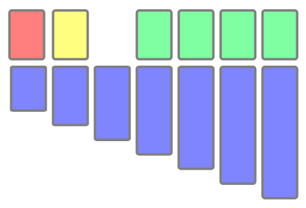

What is Klondike?
Klondike is the card game most people think of when they think of solitaire. While solitaire refers to any card game you play by yourself, the version most of us learned as children is called Klondike. It is not an easy game to win: you will perhqaps win only 1 in 7 games. But when you do win it is therefore all the more rewarding.
How to play Klondike:
Move all fifty-two cards to the foundations (four spaces in the top-right — shown in green in the illustration). They must be built up on the foundations by suit in order: Ace first, King last. You may move the top-most, face-up cards from either the seven columns in the tableau (shown in blue in the illustration) or from the waste pile (shown in yellow). In addition to the foundations, cards may also be moved to columns of the tableau if the resulting stack of cards will descend in rank by one (for example, 9-8-7) and alternate in color (for example, red-black-red). When a colukn is empty only a King may be initially placed there. When you wish, you may deal three cards from the stock pile (shown in red) to the waste.
Short cuts:
• Try double-clicking on a card. If a good location can be found for the card you clicked on, this implementation of Klondike will move it for you.
• Cards are put up in the foundation automatically for you when it is prudent to do so. Note: not every card is always put away for you automatically when it can be put up! Since cards of alternating colors are used to build ordered stacks in the tableau, it might not be wise, for example, to put a good deal more of the red cards away in the foundation when few black cards have been put away. You may need those red cards still in the tableau in order to move a black card off of something buried beneath it. For this reason, this Klondike doesn't automatically put away cards that would imbalance the rank of red and black cards in the foundations. You may of course put away to the foundation any (allowable) card yourself.
• Additionally, this Klondike will not automatically put away a card from the waste pile (unless the stock pile is empty). Since three cards are dealt at a time from the stock, it is may be important to hold back putting up a card if it would prevent you from playing another card later in the stock. Again, you may put away the card yourself.
Esoterica:
• You may bring a card back down from the foundation and return it to the tableau. This is called "worrying back" a card. I am not aware as to whether this is considered legal in Klondike. This version of Klondike allows it though and allowing it slightly increases your chance of winning Klondike.
• Note: cards you worry-back are not automatically put away again — you'll have to put them away yourself. This is true also for cards moved back down when you click the "Undo" button.